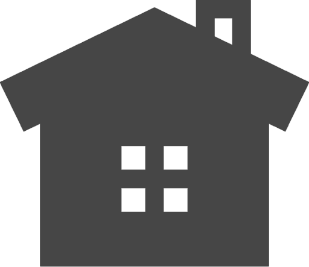

A biztonság az első! Ha elavult, sérült vagy megbízhatatlan a zárad, gyors és szakszerű zárcserét kínálunk. Szakembereink magas minőségű zárakkal modern és biztonságos megoldásokat nyújtanak.
Ajtónyitás
Kizárta magát, esetleg elveszett a kulcsa? Semmi gond! Sürgősségi zárnyitás keretében vollámgyors kiszállással, roncsolásmentesen állítjuk helyre ajtaját, akár a nap 24 órájában.
Korszerűsítés
Növeld otthonod vagy irodád biztonságát modern zármegoldásokkal! A régi, elavult zárakat korszerű, magasabb védelmet nyújtó típusokra cseréljük.
„Az ajtóm zárja már többször akadozott, ezért hívtam őket egy ellenőrzésre. Kiderült, hogy érdemes cserélni, és azonnal el is végezték a munkát. Gyors, precíz és korrekt árakon dolgoznak. Ritka az ilyen jó szakember manapság!”
„Elvesztettem a lakáskulcsomat, és sürgősen szükségem volt egy zárszerelőre. Fél órán belül kiérkeztek, és pillanatok alatt kinyitották az ajtót sérülés nélkül! A zárcsere is gyorsan ment, nagyon profi és megbízható szolgáltatás. Csak ajánlani tudom!”
„Betörés után teljes zárkorszerűsítést kértem, és nagyon elégedett vagyok az eredménnyel. A szerelő nemcsak új, biztonságos zárakat szerelt fel, de hasznos tanácsokat is adott a további védelem érdekében. Most sokkal nyugodtabban alszom!”
| Szolgáltatás | Ár (Ft) | Időtartam |
|---|---|---|
| Zárcsere | 15.000 Ft-tól | 1-2 óra |
| Betörés utáni helyreállítás | 25.000 Ft-tól | 2-3 óra |
| Sürgősségi zárnyitás | 20.000 Ft-tól + Kiszállási díj | 1 óra |
| Beléptetőrendszer telepítése | Árajánlat szerint | 4-5 óra |